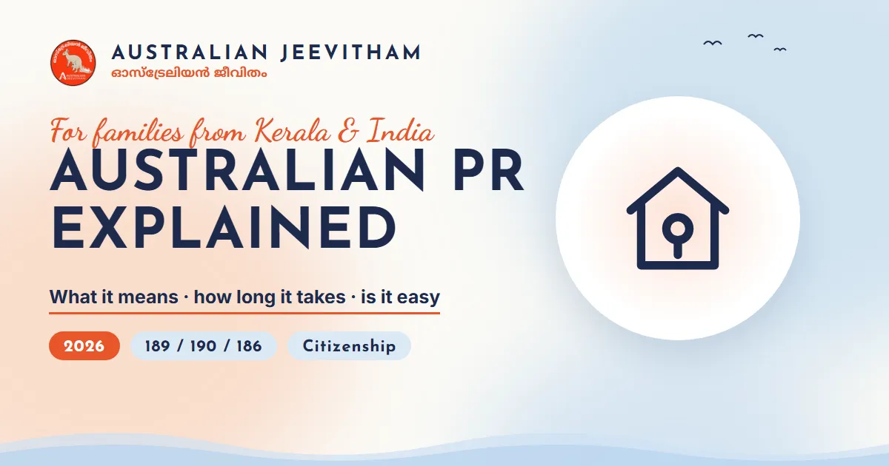
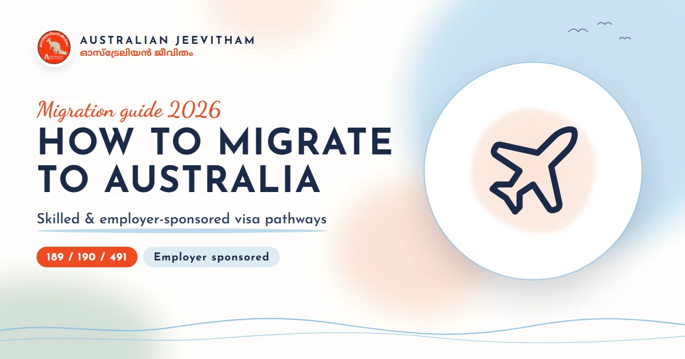
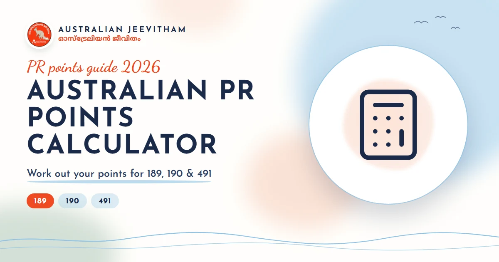
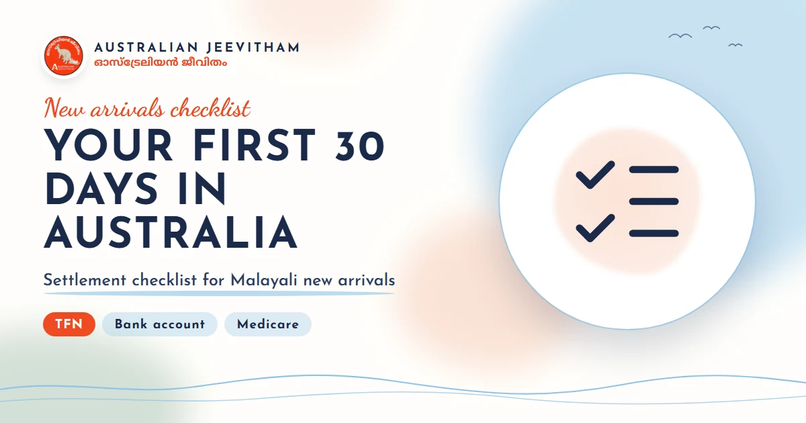
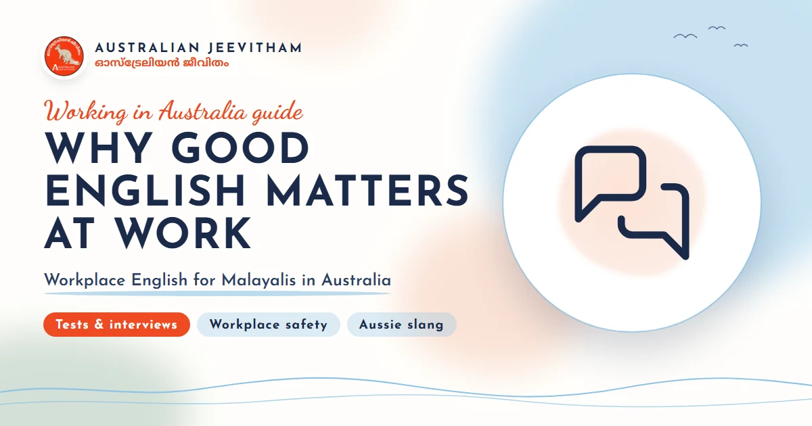

Australian PR: what it means, how long it takes and how hard it is
ഓസ്ട്രേലിയൻ PR എന്താണ്, എത്ര സമയം എടുക്കും, എത്ര ബുദ്ധിമുട്ടാണ് എന്ന് ലളിതമായി. PR means permanent residence. This page explains what PR lets you do, the main ways people from Kerala and India get it, how long the process usually takes, and what decides whether you are invited.
By Binu Vadakkedath
Last updated: November 2026

65 is the minimum to lodge an Expression of Interest. Many occupations need more for an invitation.
- 189
- 190
- 186
- Partner
- Citizenship
This guide is general information, not migration, legal, education, employment or financial advice. Rules, fees, occupation lists and assessment processes can change. Verify your circumstances with the official authority and use a registered migration agent or qualified professional where personal advice is required. തീരുമാനം എടുക്കുന്നതിന് മുമ്പ് official website-ലെ ഏറ്റവും പുതിയ വിവരങ്ങൾ പരിശോധിക്കുക.
Australian Jeevitham is a hobby channel and is not a registered migration agent. The videos and articles share personal experience and general information only - not migration or legal advice. For advice about your own visa, please consult an OMARA-registered migration agent. You can find or verify one through the Office of the Migration Agents Registration Authority (OMARA).
ഞാൻ ഒരു രജിസ്റ്റേർഡ് മൈഗ്രേഷൻ ഏജന്റ് അല്ല. ഈ വീഡിയോകളും ലേഖനങ്ങളും എൻ്റെ വ്യക്തിപരമായ അനുഭവങ്ങളും പൊതുവായ വിവരങ്ങളും മാത്രമാണ്. നിങ്ങളുടെ വിസ സംബന്ധമായ ഉപദേശത്തിന് ഒരു OMARA-രജിസ്റ്റേർഡ് മൈഗ്രേഷൻ ഏജന്റിനെ സമീപിക്കുക.
1. What PR means in Australia
PR means permanent residence. A permanent visa lets you live, work and study in Australia without a time limit and enrol in Medicare. Travel in and out is allowed for five years from the grant. After meeting the residence requirement, you can apply for Australian citizenship.
What PR lets you do
- Live in Australia with no end date on your visa.
- Work for any employer, in any job, anywhere in Australia.
- Enrol in Medicare, Australia's public health system.
- Sponsor eligible family members for some visas.
- Apply for Australian citizenship once you meet the residence requirement.
What PR does not give you
- The right to vote. Voting in federal and state elections is for Australian citizens.
- An Australian passport. You keep travelling on your Indian passport until you become a citizen.
- Unlimited travel. The travel part of a PR visa usually lasts five years. After that, you need a Resident Return visa (subclass 155 or 157) to come back as a permanent resident.
- Every Centrelink payment straight away. Many payments have a waiting period for new permanent residents. Check Services Australia before you plan your budget around them.
2. The main ways to get PR
There is no single "PR visa". PR is the result of one of several permanent visas. These are the routes most Malayali families use.
Skilled visas (points tested)
- Subclass 189 – Skilled Independent: permanent from day one. No state or employer needed, but you must be invited.
- Subclass 190 – Skilled Nominated: permanent, with a state or territory nominating you.
- Subclass 491 then 191: the 491 is a five-year regional visa. After living and working in regional Australia and meeting the income rules, you can apply for the permanent subclass 191.
→ Count your points with our PR points calculator
Employer-sponsored visas
- Subclass 186 – Employer Nomination Scheme: a permanent visa where an employer nominates you.
- Subclass 482 – Skills in Demand: a temporary work visa. Many people move to the 186 later through the same employer.
- Subclass 494 then 191: a regional employer-sponsored visa that can lead to the permanent subclass 191.
→ Nursing jobs with visa sponsorship
Family visas
- Partner visas: for the husband, wife or de facto partner of an Australian citizen, permanent resident or eligible New Zealand citizen. Usually a temporary visa first, then the permanent visa.
- Parent and child visas: for parents and dependent children of Australian citizens and permanent residents. Some parent visas have very long waiting times.
Students and graduates
A student visa (subclass 500) and the Temporary Graduate visa (subclass 485) are not PR. They can give you Australian study and work experience, which can help later with a skilled or employer-sponsored visa.
3. How long does it take to get PR in Australia?
There is no fixed time. It depends on three stages: your skills assessment, the wait for an invitation after you lodge your Expression of Interest, and the visa processing time. The invitation wait is the hardest to predict. Some people are invited quickly and some are never invited, because the highest scores in each occupation are invited first. Home Affairs publishes current processing times on its visa processing times page.
What decides each stage
| Stage | What decides how long it takes |
|---|---|
| Skills assessment | Your assessing authority (for example Ahpra, ACS, TRA, AIMS) and how complete your documents are |
| English test | How soon you can book a test and reach the score you need |
| Waiting for an invitation | Your points, your occupation and how many places are available. There is no set waiting time |
| Visa processing | Home Affairs processing times for your visa, and how quickly you answer requests for health checks and police certificates |
4. Is it easy to get PR in Australia?
It depends on your occupation, age, English score and points. Reaching 65 points lets you lodge an Expression of Interest, but many occupations need much higher scores for an invitation. Employer sponsorship and state nomination are other routes.
What helps most
- Age: you must be under 45 when invited for the skilled visas. Points are highest between 25 and 32.
- English: Proficient or Superior English adds 10 or 20 points.
- Occupation in demand: invitation scores differ by occupation. Some health and trade occupations have been invited with lower scores than crowded occupations, so check recent SkillSelect invitation rounds for yours.
- Extra points: a partner's skills, Australian study, regional study, Professional Year and the NAATI CCL test can each add points.
- State or employer support: a state nomination adds points, and an employer nomination does not use the points test at all.
5. Keeping PR and becoming a citizen
Travelling after five years
The travel facility on a permanent visa usually lasts five years from the grant. If you want to leave and come back as a permanent resident after that, apply for a Resident Return visa (subclass 155) before you travel. Check your travel date in VEVO.
The citizenship residence requirement
To apply for Australian citizenship you generally need:
- 4 years living in Australia on a valid visa, immediately before you apply,
- including the last 12 months as a permanent resident,
- with no more than 12 months away from Australia in those 4 years,
- and no more than 90 days away in the last 12 months.
Use the Home Affairs residence calculator to check your own dates.
Official sources and current checks
Frequently asked questions
What does PR mean in Australia?
PR means permanent residence. A permanent visa lets you live, work and study in Australia without a time limit and enrol in Medicare. Travel in and out is allowed for five years from the grant. After meeting the residence requirement, you can apply for Australian citizenship.
How long does it take to get PR in Australia?
There is no fixed time. It depends on your skills assessment, the wait for an invitation after your Expression of Interest, and the visa processing time. Home Affairs publishes current processing times on its website.
Is it easy to get PR in Australia?
It depends on your occupation, age, English score and points. Reaching 65 points lets you lodge an Expression of Interest, but many occupations need much higher scores for an invitation. Employer sponsorship and state nomination are other routes.
Does Australian PR expire?
The permanent visa itself does not end, but its travel facility usually lasts five years. After that you need a Resident Return visa to come back as a permanent resident.
Can I get PR without a job offer?
Yes, through the skilled visas such as subclass 189 or 190, if you have enough points and are invited. Employer-sponsored routes need an employer.
Can permanent residents vote in Australia?
No. Voting in federal and state elections is for Australian citizens.
Also planning your move or your first month?

How to Migrate to Australia
A practical 2026 overview of skilled visas (189, 190, 491), employer sponsorship (482, 186), SkillSelect points, and skills assessments.
- Skilled Visas
- PR Pathways
- SkillSelect

PR Points Guide
Complete points breakdown for Subclass 189, 190, and 491 visas, NAATI CCL Malayalam, Professional Year, and state nomination bonuses.
- 65-Point Threshold
- NAATI CCL
- GSM Visas

First 30 Days in Australia
A day-by-day settlement checklist covering SIM, bank account, TFN, Medicare, myGov, WWCC, and the childcare subsidy trap to avoid.
- Settlement Guide
- TFN & Medicare
- New Arrivals

Why Good English Matters at Work
Why spoken English matters for jobs in Australia: visa and registration tests, interviews, workplace safety, Aussie slang and handovers.
- Spoken English
- Interviews
- Workplace Safety